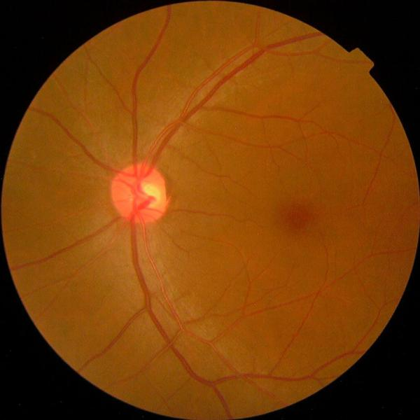
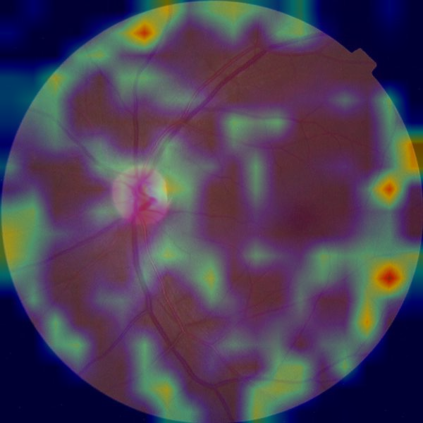
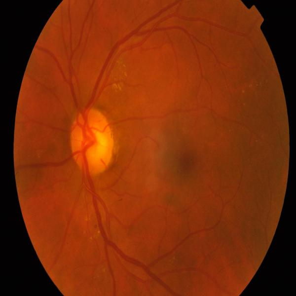
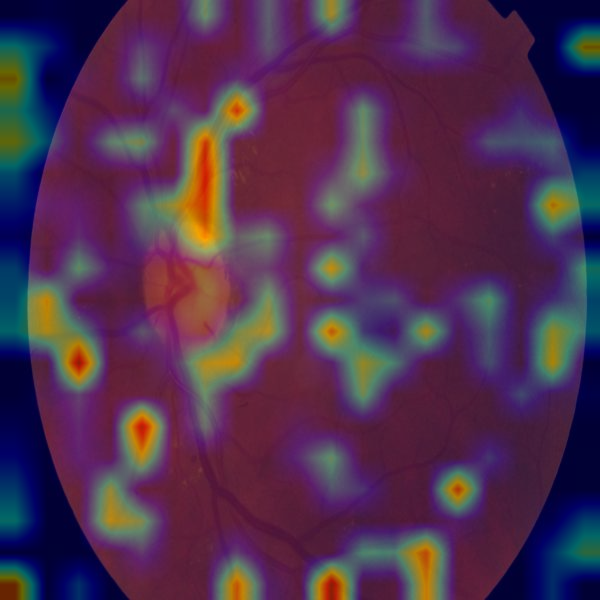
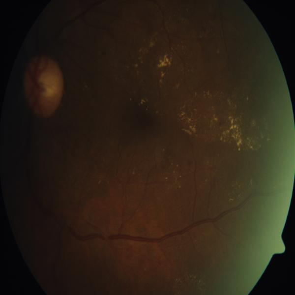
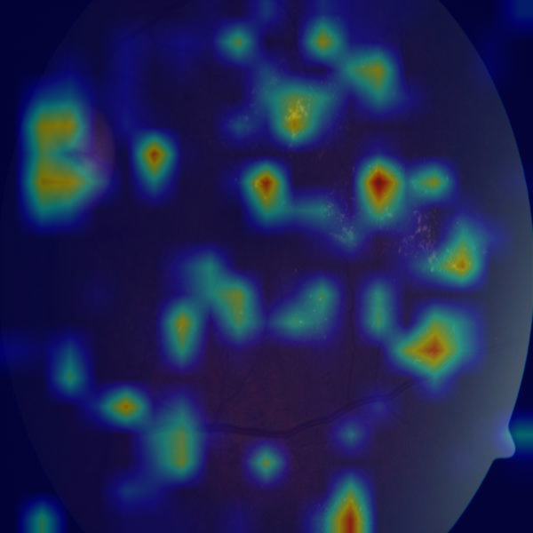
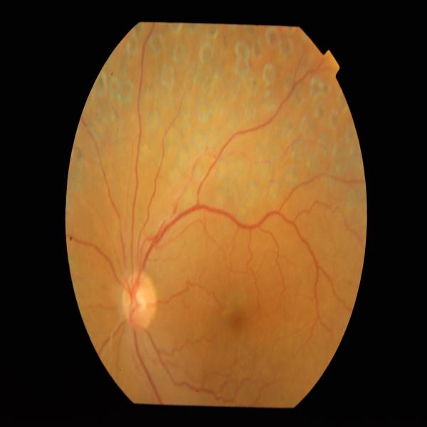
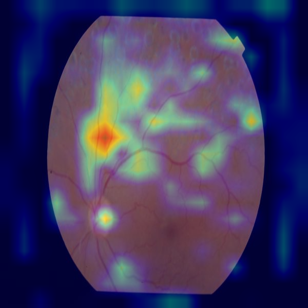
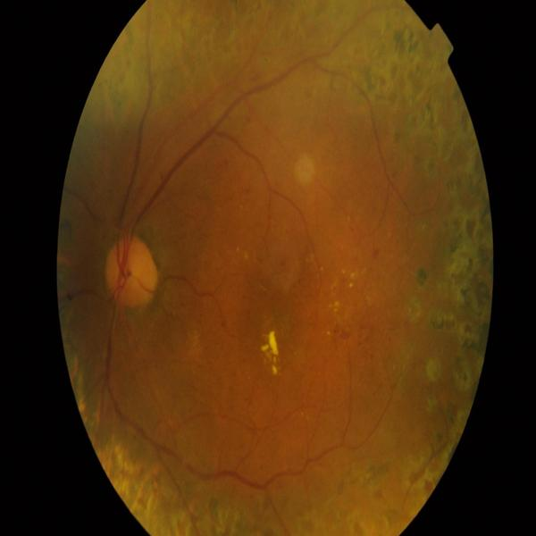
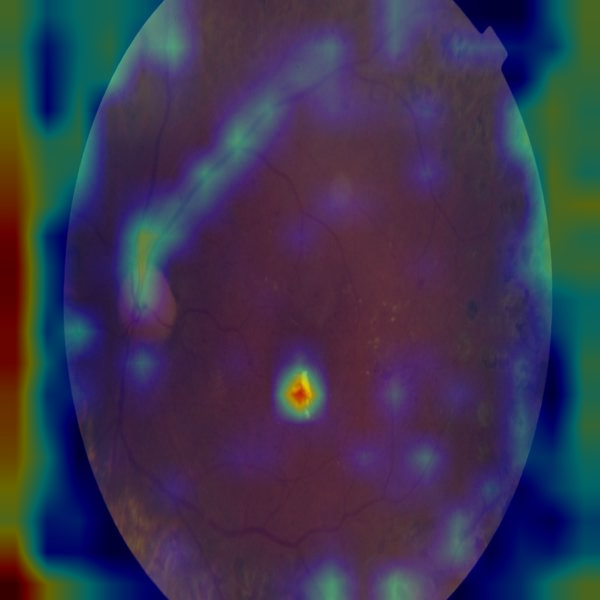

An EfficientNet-B3 classifier trained on 90,000+ fundus photographs to grade diabetic retinopathy on the standard 0–4 clinical scale, with Grad-CAM heatmaps for every prediction — because a model that grades correctly for the wrong reason won't generalize to a new camera or clinic.
One held-out test image per grade, alongside its Grad-CAM
overlay from the deployed model (checkpoints_grade1fix/best.pt,
target layer blocks[4], 19×19 resolution). Recall shown
is this model's per-class recall on the full test set, not just this one image.


No visible retinopathy. The model's easiest class by a wide margin — it dominates the training set.
recall 0.92

Microaneurysms only. The hardest boundary in this study — see the writeup for why.
recall 0.11

More extensive microaneurysms and hemorrhages than mild disease.
recall 0.59

Widespread hemorrhages and venous beading. The rarest class in this dataset (94 test images).
recall 0.14

Neovascularization — abnormal new blood vessel growth. Sight-threatening if untreated.
recall 0.678,741 de-leaked original images (no source photo shared between train and test). None of the three reaches the 0.80 QWK target set at the start of this project — see the README's Conclusion for what that means.
| Metric | Frozen backbone | Full fine-tune | + grade-1 boost (deployed) |
|---|---|---|---|
| Quadratic Weighted Kappa | 0.702 | 0.723 | 0.710 |
| Accuracy | 0.820 | 0.840 | 0.821 |
| Grade-1 (Mild) recall | 0.08 | 0.03 | 0.111 |
| Referable-DR (≥grade 2) sensitivity | 0.68 | 0.698 | 0.674 |
| Referable-DR specificity | 0.95 | 0.954 | 0.960 |
The deployed model trades 0.013 QWK for the ability to detect Mild DR at all — the unboosted fine-tune's grade-1 recall of 0.03 means it misses nearly every early-stage case. Full numbers, confusion matrices, and the class-weight-boost mechanism are in the README.